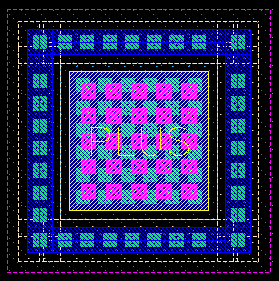
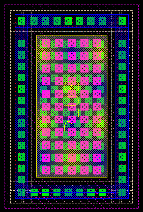
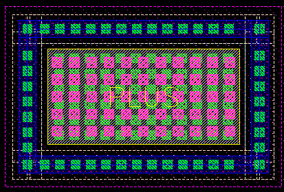

pdiode width and gate length properties
these layouts show the effect of varying the width and length for an example pdiode
width = 5u, length = 5u

finger width = 5u, length = 10u

width = 10u, length = 5u
